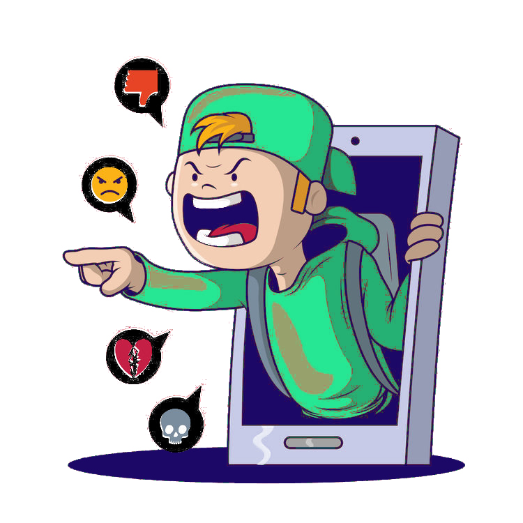
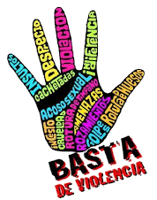

El ciberacoso, también conocido como cyberbullying
Es una forma de acoso o intimidación que se lleva a cabo a través de medios digitales, como internet, redes sociales, mensajes de texto, correos electrónicos, aplicaciones de mensajería instantánea, juegos en línea, entre otros.
Este tipo de acoso puede ocurrir de diversas formas y tiene el potencial de alcanzar a la víctima las 24 horas del día, los 7 días de la semana,
ya que los agresores pueden aprovechar la omnipresencia de la tecnología para hostigar a sus víctimas incluso fuera del entorno escolar.
Las plataformas de redes sociales han cambiado radicalmente la forma en que nos comunicamos en línea, pero lamentablemente también han facilitado el ciberacoso. A través de funciones como comentarios, mensajes directos y publicaciones en el muro, los acosadores pueden enviar mensajes hirientes, insultos, burlas o difamación a sus víctimas. Además, pueden crear perfiles falsos o suplantar identidades para difundir rumores, enviar mensajes amenazantes o comprometer la reputación en línea de la víctima.
El acoso visual también es común en las redes sociales, donde los acosadores pueden compartir imágenes humillantes, fotos comprometedoras o memes ofensivos con el objetivo de ridiculizar o avergonzar a la víctima. Incluso pueden utilizar grupos o eventos en línea para excluir a la víctima, etiquetándola como no deseada o rechazada por la comunidad en línea.
Para protegerse contra el ciberacoso en las redes sociales, es fundamental que los usuarios comprendan la importancia de configurar adecuadamente su privacidad en línea. Esto incluye ajustar la configuración de privacidad de sus perfiles para controlar quién puede ver sus publicaciones, fotos, amigos y otra información personal. Limitar el acceso solo a amigos cercanos y familiares puede ayudar a reducir el riesgo de ciberacoso.

Además, es importante controlar quién puede contactarlos y utilizar las herramientas de reporte y bloqueo disponibles en las plataformas de redes sociales para denunciar cualquier comportamiento de acoso y evitar futuras interacciones con los acosadores. También es fundamental no compartir información personal sensible en línea y mantener registros de evidencia, como capturas de pantalla de mensajes ofensivos o publicaciones, en caso de necesidad.
Caracteristicas del Ciberacoso
Anonimato y Difusión Rápida: Los agresores pueden ocultar su identidad fácilmente en línea, lo que les permite acosar a sus víctimas de forma anónima. Además, los mensajes y contenidos pueden propagarse rápidamente a través de internet, alcanzando a un gran número de personas en poco tiempo.
Contenido Dañino y Humillante: El ciberacoso puede implicar el envío de mensajes, imágenes o videos que son humillantes, difamatorios, amenazantes o que de alguna manera causan daño emocional a la víctima. Esto puede incluir insultos, burlas, amenazas de violencia, manipulación emocional, entre otros.
Impacto Psicológico y Emocional: El ciberacoso puede tener un impacto devastador en la salud mental y emocional de la víctima, causando estrés, ansiedad, depresión, baja autoestima e incluso pensamientos suicidas. La naturaleza persistente e invasiva del acoso en línea puede hacer que sea difícil para la víctima escapar de su alcance.
Acoso Colectivo (Linchamiento Digital): En algunos casos, el ciberacoso puede involucrar a múltiples agresores que se unen para acosar a una sola víctima, lo que amplifica el daño y la sensación de persecución experimentada por la víctima.
Acoso Sexual y Explotación: El ciberacoso también puede incluir formas de acoso sexual, como el envío de mensajes sexuales no deseados, la difusión de imágenes íntimas sin consentimiento (conocido como "revenge porn" o porno de venganza), o el chantaje sexual.
A nivel nacional, los datos más actuales indican que 75% de la población de 12 años y más utilizó Internet en cualquier dispositivo. De esta población, 21% declaró haber vivido alguna situación de acoso cibernético por las que se indagó, siendo mayor el caso para mujeres (23%) que para los hombres (19%). En el ámbito escolar, 25% de las mujeres mayores de 15 años señalaron haber experimentado violencia en la escuela, siendo los principales agresores sus compañeros (40%) y maestros (14%).

Consejos para prevenir el ciberacoso
Configuración de privacidad: Enseña a los niños y adolescentes a configurar adecuadamente la privacidad en sus perfiles de redes sociales y otras plataformas en línea para limitar quién puede ver su información personal y contenido.
Uso seguro de contraseñas: Educa sobre la importancia de utilizar contraseñas fuertes y únicas para cada cuenta en línea, y a cambiarlas regularmente. Evitar compartir contraseñas con amigos o desconocidos también es crucial.
Pensar antes de publicar: Fomenta la reflexión sobre el impacto de las publicaciones en línea antes de compartirlas. Recordar que lo que se publica en internet puede permanecer allí de forma permanente y tener consecuencias.
No responder al acoso: Enseña a los niños a no responder a los mensajes o comentarios de acoso en línea. Ignorar a los acosadores puede ayudar a evitar que continúen su comportamiento.
Reportar el acoso: Anima a los niños a reportar cualquier incidente de ciberacoso a las autoridades escolares, a los padres o tutores y a las plataformas en línea donde ocurrió el acoso.
Bloquear a los acosadores: Enséñales cómo bloquear a usuarios que estén acosando o molestando en línea. Esta es una forma efectiva de limitar la interacción con personas que están siendo agresivas.
Mantener la comunicación abierta: Fomenta un ambiente donde los niños y adolescentes se sientan seguros para hablar sobre sus experiencias en línea. Mantener líneas abiertas de comunicación puede ayudarles a buscar ayuda si son víctimas de ciberacoso.